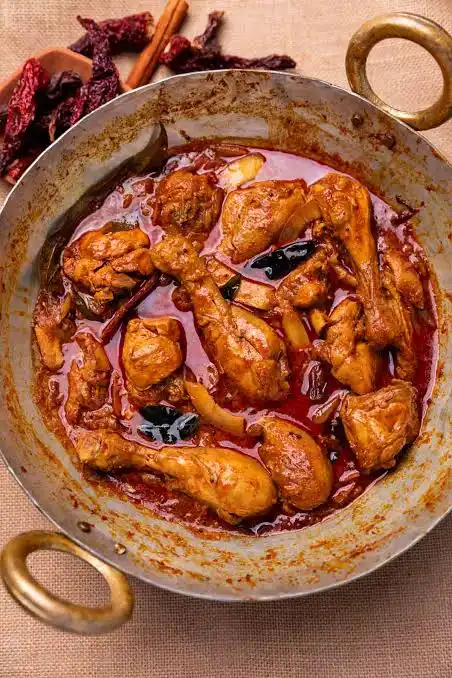

CHICKEN CURRY
HOME

DESCRIPTION
Chicken curry is a popular dish featuring tender pieces of chicken simmered in a savory,
spiced gravy made from onions, tomatoes, garlic, ginger, and ground or whole spices
INGREDIENTS
- chicken
- cooking oil
- onions
- tomatoes
- ginger garlic paste
- green chillies
- yogurt or coconut milk
- water or chicken stock
- salt
- turmeric powder
- kasmiri mirch
- coriander powder
- garam masala
- cumin powder
- bay leaf
- coriander leaf
STEPS
Prep the base
- Heat 3 to 4 tablespoons of oil or ghee in a large pot or pan over medium heat
- Add the whole spices (bay leaf, cinnamon, cardamoms, cloves, and cumin seeds) and let them sizzle in the hot oil for a few seconds until fragrant
Sauté the Onion
- Add the finely chopped onions and a small pinch of salt
- Sauté on medium-high heat for 8 to 12 minutes until the onions turn golden brown and caramelized
Add Aromatics and Tomatoes
- Stir in the ginger-garlic paste and cook for 1 to 2 minutes until the raw smell disappears
- Add the chopped tomatoes and green chilies. Cook until the tomatoes turn soft and mushy
Add the Spices
- Reduce the heat slightly and add turmeric powder, red chili powder, and coriander powder
- Stir and fry the spices for about 1 to 2 minutes (a process called bhuno) until the oil begins to separate from the masala paste
Cook the Chicken
- Add the chicken pieces into the pan
- Turn the heat up to high and sauté the chicken for 5 minutes until it changes color and turns pale or lightly browned
Simmer and Build Gravy
- Pour in warm water (about 200–250 ml; avoid cold water as it can make the chicken tough). Stir well and bring the mixture to a gentle boil
- Cover the pot with a lid, lower the heat to a simmer, and cook for 15 to 20 minutes until the chicken is tender and cooked through
Finish and Garnish
- Remove the lid, sprinkle in the garam masala powder, and stir well. Check the salt and adjust to taste
- Let it simmer uncovered for 2 more minutes to thicken the gravy
- Turn off the heat and garnish generously with freshly chopped coriander leaves
There you have it
eat it warm with either roti, butter nan or rice